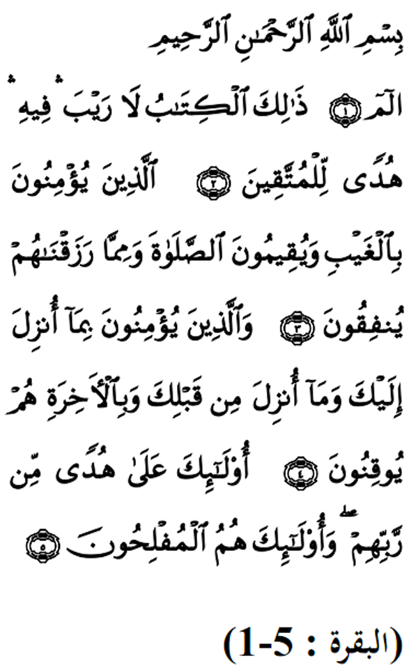

|
Terjemahan (1) Alif, Laam, Miim. (2) Kitab (Al-Quran) ini tidak ada sebarang keraguan padanya; petunjuk bagi mereka yang bertaqwa (3) Iaitu mereka yang beriman kepada yang ghaib, yang mendirikan solat dan menafkahkan sebahagian rezeki mereka yang Kami anugerahkan kepada meraka (4) Dan mereka yang beriman kepada kitab (Al-Quran) yang telah diturunkan kepadamu dan yang diturunkan sebelummu serta mereka yakin akan adanya (kehidupan) akhirat (5) Mereka itulah yang tetap mendapat petunjuk dari Tuhannya mereka dan merekalah orang-orang yang beruntung Fadhilat Wirid Tiap pekerjaan yang penting yang tidak dimulakan dengan bacaan Basmalah maka ia kurang berkat. Sesiapa yang membaca sepuluh ayat dari surah Al-Baqarah pagi hari, tidak dihampiri oleh syaitan hingga ke petang dan jika ia membaca seperti itu di petang hari, tidak akan dihampiri syaitan hingga ke pagi dan tidak akan ia lihat sesuatu yang tidak diingini pada anak buahnya dan harta bendanya. -Hadith riwayat Ibn Mas'ud (ra) |
 |